Nota: Este no es el guión
oficial y no se puede llevar al examen, sirve sólo para repasar
la práctica y completar los apuntes.
A) Diversidad de los Helechos: principales grupos actuales y su morfología básica
| Divisiones |
Tallo |
Hojas |
Esporangios |
Ejemplos |
| Equisetofitas Grupo relíctico, con un
sólo género actual
|
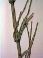 Articulado (entrenudos alargados) y con ramas verticiladas |
En
forma
de pequeñas escamas verticiladas y soldadas entre sí |
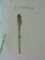 En estróbilo apical |
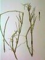 Equisetum ramosissimum |
| Licopodiofitas Grupo relíctico con 3
géneros actuales
|
No
articulado (entrenudos cortos); ramificado o no |
Estrechas
y dispuestas helicoidalmente, con nervadura apenas desarrollada y simple |
En
la
axila de las hojas |
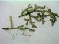 Selaginella denticulata  Isoetes durieui |
| Polipodiofitas (=Pteridofitas sensu stricto) Grupo más reciente, con
numerosos géneros actuales
|
Generalmente
subterráneo (rizoma) y poco ramificado. En el Hemisferio
Sur quedan algunos arborescentes como palmeras y en zonas
cálidas los hay epífitos.
|
Grandes
(en relación con el tamaño de la planta), con nervadura
compleja = frondes |
Generalmente en grupos = soros, con frecuencia en el
envés de los frondes
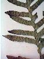 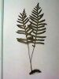 Polypodium cambricum |
|


B) Diversidad de las Polipodiofitas
| 3
Tipos
de frondes según la posición de los esporangios |
División de los frondes | Esporangios y soros |
|
| 1.- Fronde bífido: parte fértil con estróbilo apical | |||
| Bífido |
Formando un estróbilo
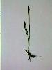 Ophioglossum lusitanicum
|
||
| Fronde con la parte apical
fértil y el resto estéril |
Dos veces pinnado |
Agrupados en los segmentos
apicales del fronde
Osmunda regalis (helecho real)
|
|
| Dos
tipos de frondes en la misma planta: unos fértiles y otros
estériles |
Una
vez pinnados |
Blechnum spicans
|
|
| Todos los frondes
potencialmente fértiles y sin partes fértiles y
estériles claramente diferentes. A veces son estériles,
pero todos iguales |
Entero |
Agrupados en soros alargados,
con indusio
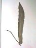 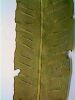 Phyllitis
scolopendrium (lengua de buey)
|
|
| Una
vez pinnado, con división incompleta |
Soros redondeados, sin indusio Polypodium cambricum (polipodio)
|
||
|
Esporangios protegidos por
numerosas escamas
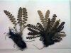 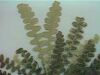 Asplenium ceterach (doradilla)
|
|||
| Una vez pinnado, con
división completa |
Soros alargados con indusio
Asplenium trichomanes
|
||
| Dos
o tres veces dividido (al menos en la parte inferior) |
Pseudoindusio
(borde de la hoja que se repliega y protege a los esporangios
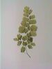 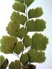 Adianthum capillus-veneris (culantrillo
de pozo)
|
||
| Pseudoindusio 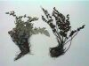 Cheilanthes maderensis
|
|||
| Soros redondeados, con indusio Polystichum setiferum
|
|||
| Soros alargados, con indusio Athyrium filix-femina (helecho
hembra)
|
|||
|
Frondes generalmente
estériles; cuando son
fértiles los esporangios están el el borde de los
segmentos
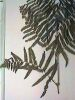 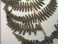 Pteridium aquilinum (helecho
común)
|
|||


© Carlos Romero Zarco, Universidad de Sevilla - 28 de Enero de 2004 -